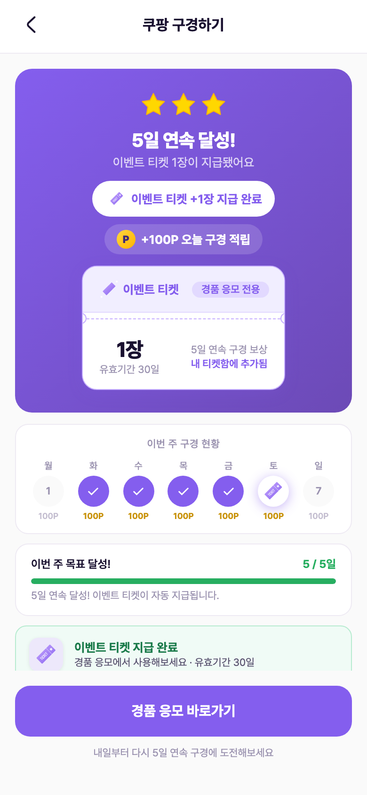
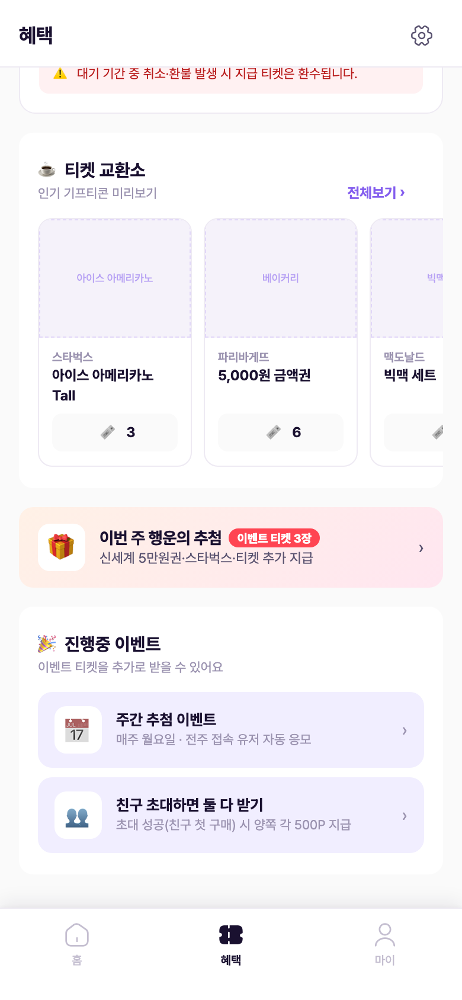
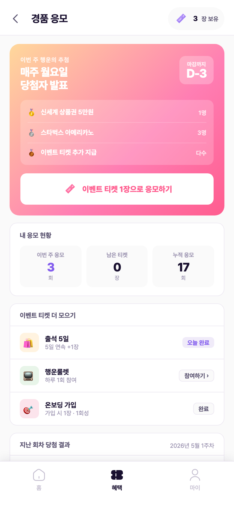
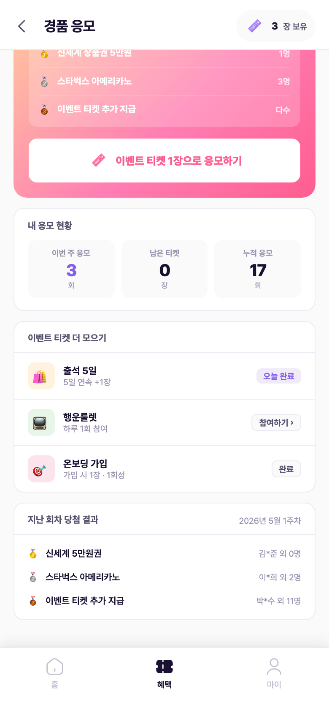
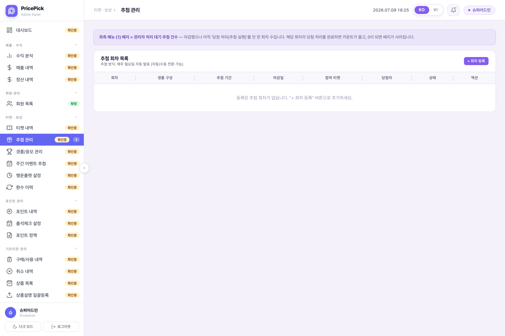
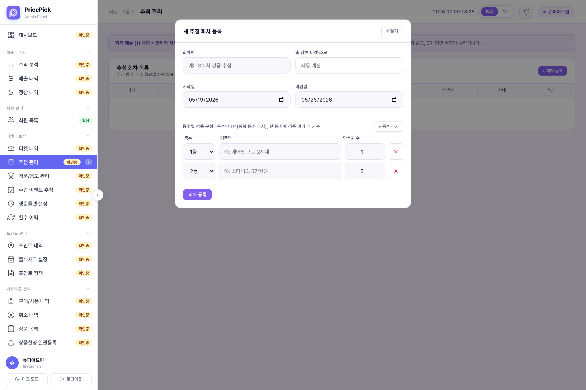
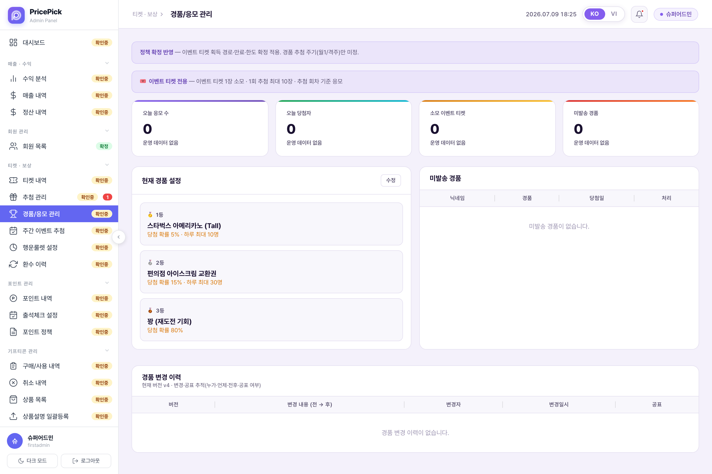
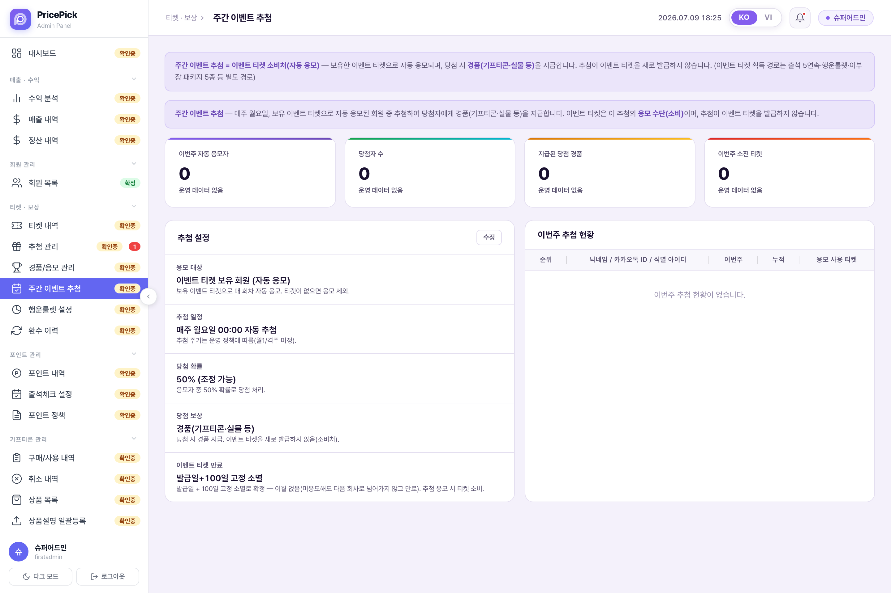

이벤트 티켓 획득부터 응모, CMS 추첨 운영까지 — 실제 배포본 화면 캡처 기반
이벤트 티켓은 경품 응모 전용 티켓으로, 구매 적립 티켓(랜덤/등급)과 완전히 분리된다. 획득 경로는 출석 5일 연속·행운룰렛·온보딩 가입(1회성) 등이며, 전 경로 합산 일 5장 / 월 30장 한도가 적용된다. 화면은 5일 연속 출석 달성 시 이벤트 티켓 1장이 지급되는 보상 화면 — 티켓 카드에 "경품 응모 전용" 배지가 붙고, 하단 "경품 응모 바로가기" 버튼으로 응모 화면과 직접 연결된다.

혜택 탭 중단의 "이번 주 행운의 추첨" 카드가 경품 응모 화면의 진입점이다. 카드에 보유 이벤트 티켓 수와 이번 회차 경품 요약이 노출된다. 그 아래 "진행중 이벤트" 리스트에도 주간 추첨 이벤트 행이 있다.

상단 히어로 카드에 이번 회차 경품 구성(등수별 경품·당첨자 수)과 마감 D-day가 노출되고, "이벤트 티켓 1장으로 응모하기" 버튼으로 응모한다. 그 아래 "내 응모 현황"에서 이번 주 응모 횟수·남은 티켓·누적 응모를 확인한다. 응모하면 티켓이 즉시 소모되며 취소할 수 없다(1단계 기준). 1회 추첨에 누적 최대 10장까지 응모 가능하고, 응모 티켓 수에 비례해 당첨 확률이 올라간다.

응모 화면 하단에서 이벤트 티켓 획득 경로 3종(출석 5일·행운룰렛·온보딩 가입)의 오늘 상태를 확인하고 각 미션으로 이동할 수 있다. 맨 아래 "지난 회차 당첨 결과"는 직전 회차의 등수별 경품과 당첨자(마스킹 닉네임·인원)를 보여준다.

CMS "추첨 관리"에서 추첨 회차를 등록·운영한다. 회차별로 경품 구성·추첨 기간·마감일·참여 티켓·당첨자·상태를 관리하고, 마감됐지만 당첨 처리(추첨 실행)를 안 한 회차 수가 좌측 메뉴 배지로 표시된다. 정책 최종안 기준 1단계 추첨 실행은 관리자 수동 — 당첨자에게 카톡/이메일로 배송지 입력을 안내하고 경품을 수동 발송한다.

회차명·시작일·마감일을 입력하고 등수별 경품 구성을 편성한다(등수당 1행·중복 등수 금지, 한 등수에 경품 여러 개 가능, 등수별 당첨자 수 지정). 총 참여 티켓 소모는 자동 계산 항목이다.

오늘 응모 수·오늘 당첨자·소모 이벤트 티켓·미발송 경품 KPI를 집계하고, 현재 경품 설정을 편집한다. 당첨됐지만 아직 발송 안 한 경품은 "미발송 경품" 목록에서 처리하고, "경품 변경 이력"으로 경품 구성 변경을 버전·공표 여부와 함께 추적한다(누가·언제·전후·공표).

이벤트 티켓 보유 회원을 매 회차 자동 응모시키고 매주 월요일 00:00 자동 추첨하는 방식의 설정 화면. 응모 대상·추첨 일정·당첨 확률(50%, 조정 가능)·당첨 보상(경품 지급, 티켓 신규 발급 없음)·이벤트 티켓 만료(발급일+100일)를 정의하고, 이번주 자동 응모자·소진 티켓을 집계한다.

마스터 정책서에 미결로 명시된 항목. 이 문서는 임의로 확정하지 않고 그대로 표시한다.
2026.07.09 배포본 실화면 기준으로 확인된 정책·화면 불일치. 번호는 위 각 단계의 경고 배지와 연결된다.
| # | 항목 | 정책 최종안 (SoT) | 앱 화면 | CMS 화면 |
|---|---|---|---|---|
| 1 | 추첨 주기 | 미결 (월 1회 vs 격주) | "매주 월요일 당첨자 발표" (응모 메인·혜택 탭) | "매주 월요일 자동 발표" (추첨 관리) · 주간 이벤트 추첨은 "매주 월요일 00:00" + 부연 "월1/격주 미정" |
| 2 | 이벤트 티켓 유효기간 | 발급일 + 100일 고정 소멸 | "유효기간 30일" (출석 5일 보상 화면 2곳) | 발급일+100일 (일치) |
| 3 | 응모 방식 | 티켓 직접 응모 (즉시 소모·취소 불가) | 응모 메인 = 직접 응모 · 혜택 탭 이벤트 행 = "전주 접속 유저 자동 응모" | 경품/응모 관리 = 직접 응모(1장 소모·최대 10장) · 주간 이벤트 추첨 = "보유 티켓 자동 응모" |
| 4 | 당첨 확률 모델 | 응모 티켓 수 비례 · 비복원 추첨 | 표기 없음 | 주간 이벤트 추첨 = "50% (조정 가능)" · 경품/응모 관리 = 등수별 %(5/15/80) 즉석 확률형 |
| 5 | 추첨 실행 | 1단계 관리자 수동 실행 | — | "자동 발표(자동/수동 전환 가능)" · "00:00 자동 추첨" |
| 6 | 경품 구성 샘플 | 회차별 등수 구성 (구성 자체는 운영 재량) | 신세계 상품권 5만원 1명 · 스타벅스 3명 · 티켓 추가 지급 다수 | 경품/응모 관리 = 스타벅스 · 아이스크림 · 꽝(80%) — 앱 샘플과 상이, "꽝"은 추첨형 모델에 없는 개념 |